Direction Nationale des Usages du Numérique DN1-AUPeN
Direction Nationale des Usages du Numérique DN1-AUPeN
Formation Teams, niveau 1
~ à propos de moi ~
Christian Cousquer
~ Expert TIC, chef de projet web et ingénieur pédagogique
à la direction des usages du numérique du Cnam ~
~ Expert en Réalité Virtuelle, Mobile & Accessibilité ~
précédemment Comédien professionnel
Plan de la formation TEAMS
- L'interface et les fonctionnalités de Teams,
- organiser une réunion, un rendez-vous,
- techniques et usages de la visoconférence,
- techniques et usages avancés,
- Questions - Discussion
TEAMS : interface et fonctionnalités
Avec TEAMS, vous avez une suite collaborative très puissante pour échanger, partager. Donc il faut faire attention...
Un outil de visioconférence puissant à utiliser en combinaison avec d'autres outils bureautiques
Teams ne remplace pas un webmail ! Prenez Teams pour ses points forts, pas pour tout...
Installation de l'application TEAMS
Téléchargez et installez Teams sur https://www.microsoft.com/fr-fr/microsoft-365/microsoft-teams/download-app
connectez vous avec vos identifiants et mot de passe en prenom.nom@lecnam.net
Vous aurez à faire installer Teams à vos correspondants aussi.
Principes clès de fonctionnement de l'interface
Dans TEAMS, tout tourne autours du concept du "canal". il faut voir un canal comme un salle de "Chat" d'où un utilisateur peut :
- discuter avec une ou plusieurs personnes par écrit,
- appeler par audio ou par vidéo une ou plusieurs personnes,
- échanger des fichiers, des liens internet avec une ou plusieurs personnes,
- partager son écran avec une ou plusieurs personnes,
- discuter autours d'un tableau blanc.
Principes clès de fonctionnement de l'interface
Là où cela se complexifie, c'est qu'il y a plusieurs types de Canaux...
Il y a :
- des canaux privés (Conversations), pour discuter en tête à tête,
- des canaux d'√©quipe (Équipes), pour discuter √† plusieurs avec un groupe donn√©,
- et une équipe peut avoir autant de canaux qu'elle le souhaite, n'a de thématiques à traiter...
Chaque canal est "étanche", le contenu d'un canal ne peut être vu depuis un autre canal
Anatomie d'un canal dans TEAMS
Interface de Teams
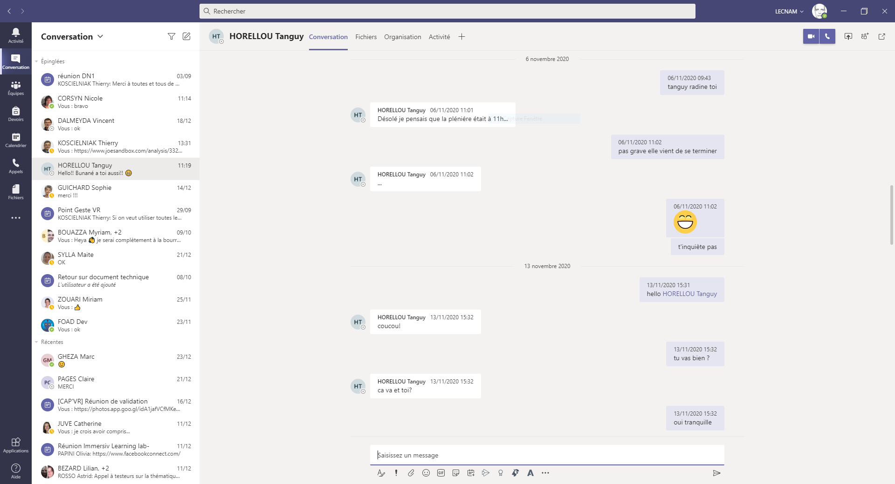
Qu'est-ce qu'un canal ?
Faire un nouveau message

Appeler, partager son écran
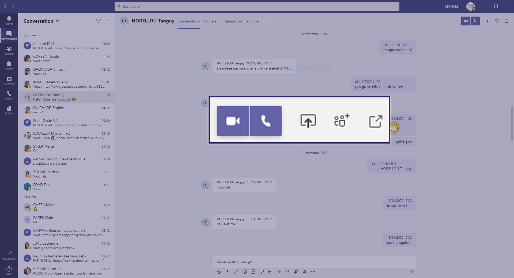
Lors d'un appel, une nouvelle fenêtre apparaît

Partager son écran lors d'un appel en visio
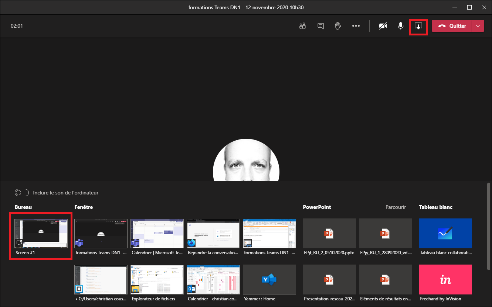
Le tableau blanc se trouve dans le partage d'écran
Naviguer d'un canal à un autre
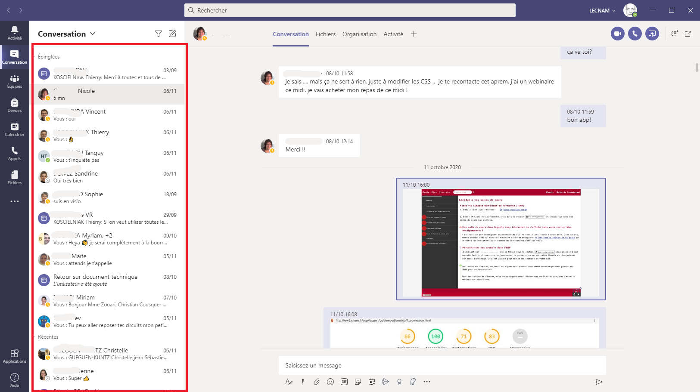
La barre de Recherche
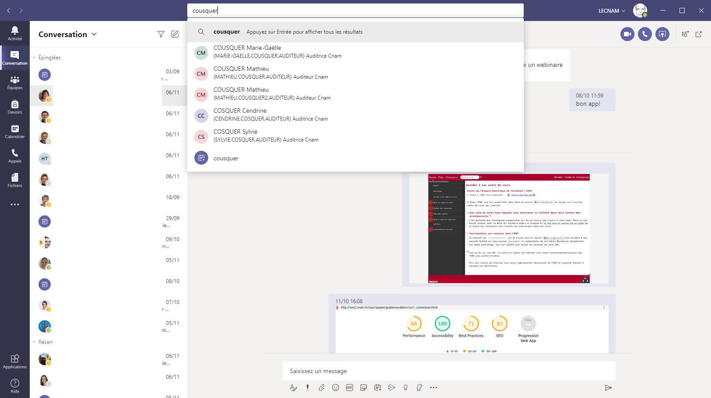
La barre de Navigation
Le calendrier
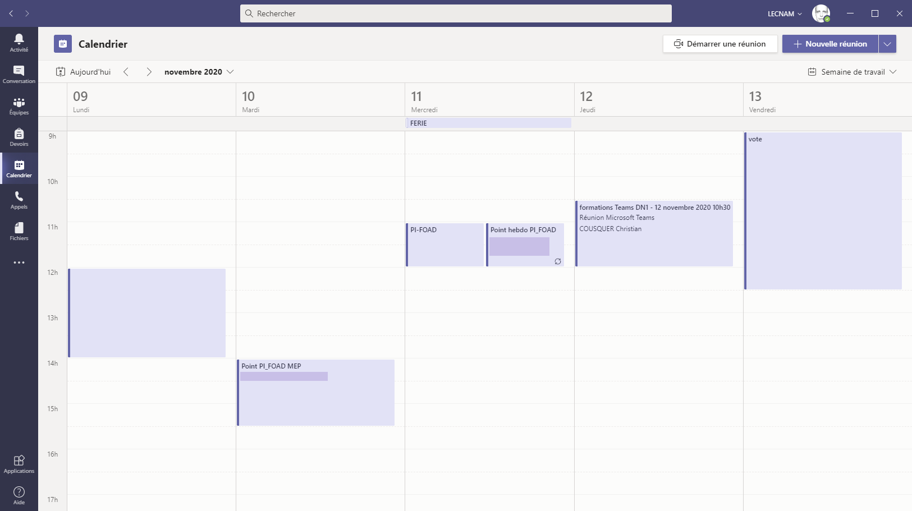
TEAMS : organiser une réunion, un rendez-vous
Trois façons d'organiser une réunion
Il existe 3 façons de programmer une réunion
Dans un canal Teams, pour une réunion immédiate ou planifiée
Dans le calendrier Teams, pour une réunion plannifiée
Dans la messagerie Outlook, pour une réunion plannifiée
Une réunion immédiate
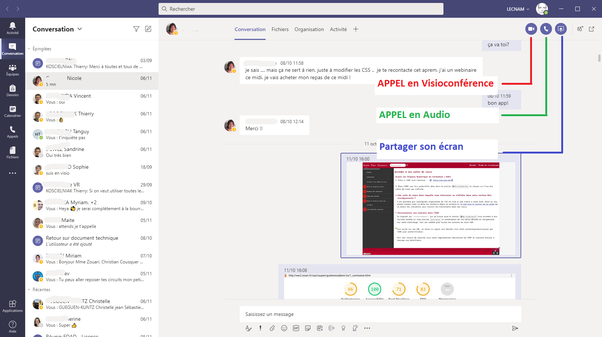
Dans le calendrier Teams
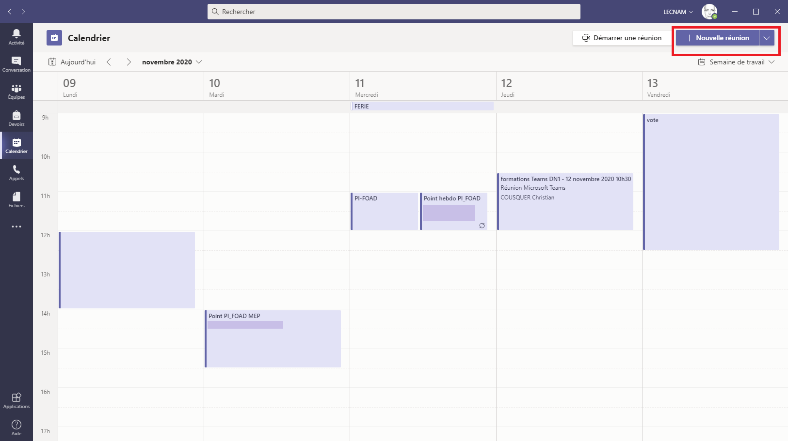
dans Outlook
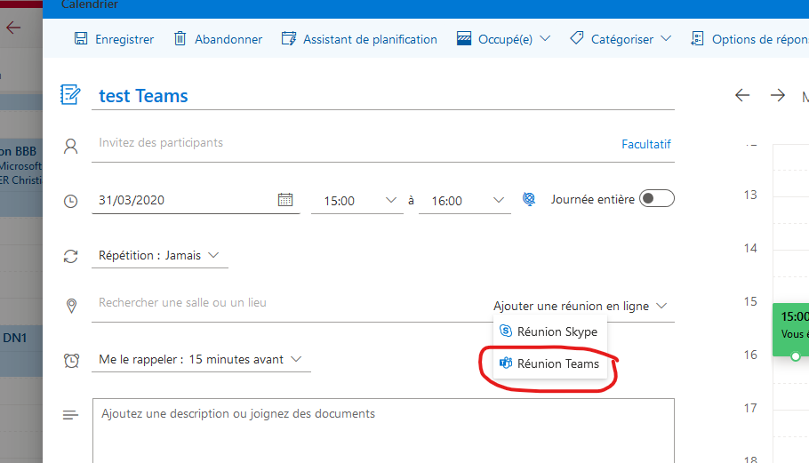
Avantages de planifier dans Outlook
Vos correspondants reçoivent une notification par mail avec un lien direct !
TEAMS : techniques et usages bureautiques
Consignes importante d'usage de Teams
Il faut toujours savoir à qui vous communiquer, dans quel canal de conversation ou d'équipe vous vous trouvez.
Prenez Teams pour un outil de visioconférence
Teams doit être utilisé pour discuter avec des correspondants autours de documents (powerpoints, pdfs, sites Web) via le partage d'écran.
Pour créer de l'interactivité avec eux par le biais :
de la vidéo et du son
mais aussi de croquis ou d'annotations en direct.
Limites de Teams pour les usages bureautiques
Teams n'est pas une messagerie mail comme l'est outlook. Un mail n'a pas la même valeur qu'un message dans un canal Teams
Risque de désorientation des utilisateurs si vous partagez des fichiers via les fichiers de Teams dans trops de canaux différents.
Partages d'écran
Conseil : ayez tous vos documents ouverts pour débuter une séance
Si vous partager un document avec du son, activez le son de l'ordinateur lors de la sélection de l'écran du partage
Inclure le son de l'ordinateur en partageant votre écran
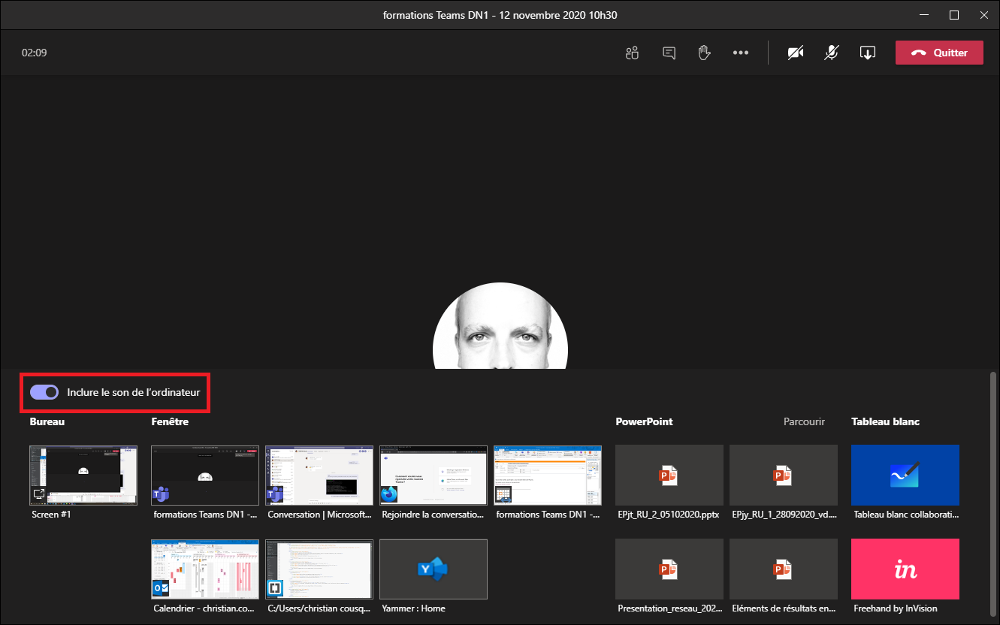
Règles à suivre si connexion mauvaise
Limiter les webcams allumées
Couper les micros
Donner la parole au fur et à mesure
TEAMS : techniques et usages avancés
Intégrer une classe virtuelle Teams dans une application tierce
Allez dans l'ENF et ouvrez Outlook cnam
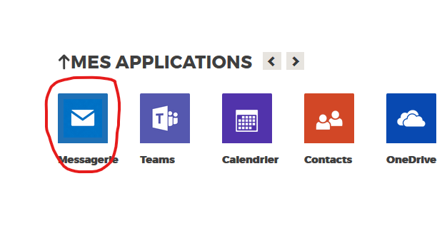
Allez sur le calendrier d'Outlook
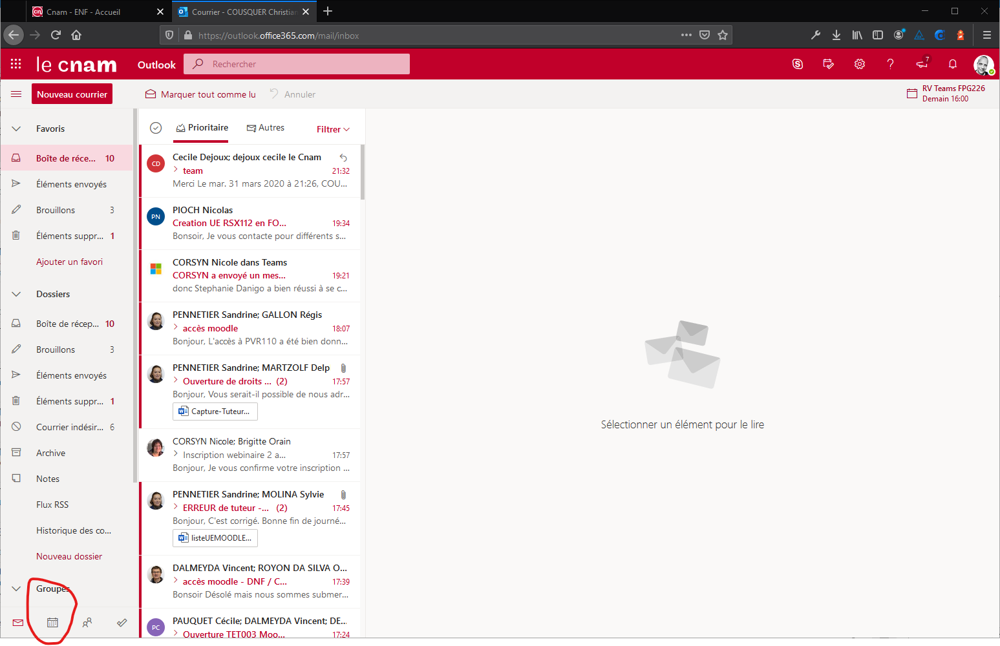
Créer un nouveau rendez-vous dans Outlook, donnez-lui un titre et sélectionner « autres options » :
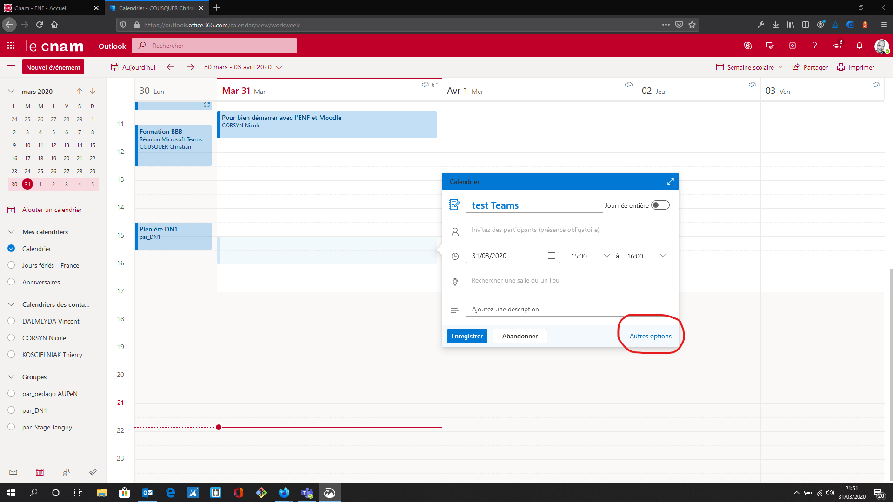
Sélectionner Réunions Teams dans le menu « Ajouter une réunion en ligne » :
Enregistrer dans le calendrier le rendez-vous :
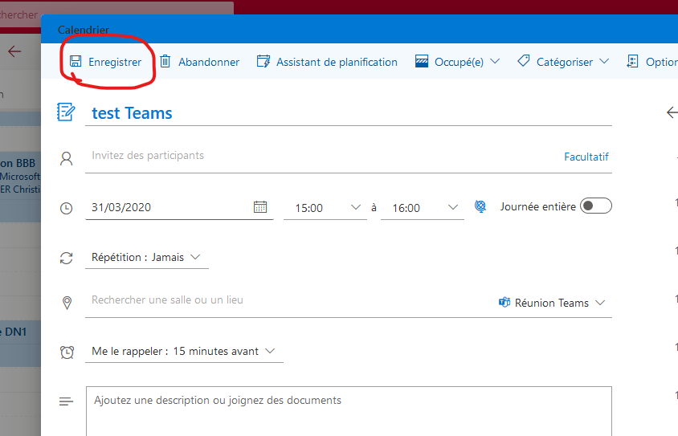
Cliquer sur le rendez-vous nouvellement créé, ce qui est intéressant ici c’est le lien « Participer à la Réunion Teams »
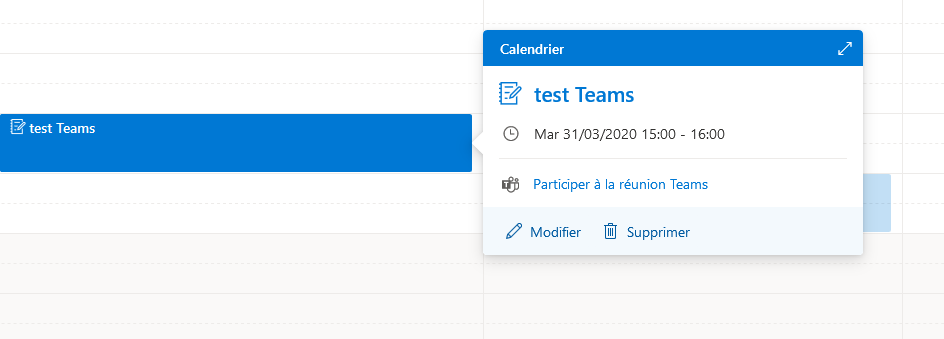
Avec votre souris, survolez le lien, faites un clic droit dessus et faites « copier l’adresse du lien »
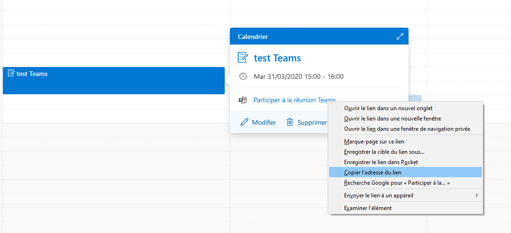
Ouvrir un bloc-note, et coller dedans l’adresse copiée. Vous avez maintenant une url que vous pouvez insérer dans une étiquette d’un cours Moodle.
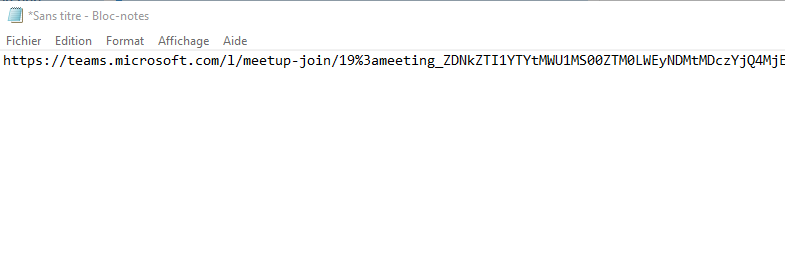
Créer une section classe virtuelle Test dans votre cours Moodle
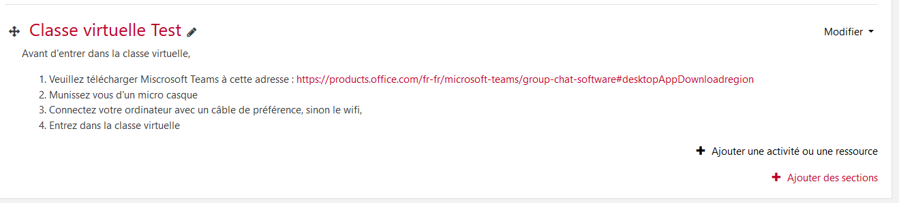
Ajouter une activité ou une ressource : étiquette
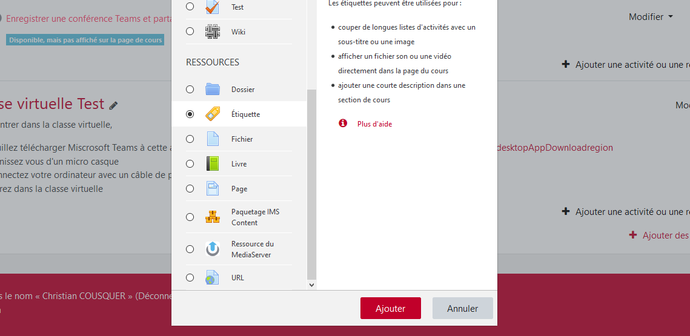
Copier l‘url de Teams du bloc-note dans l’étiquette avec un libellé « classe virtuelle »
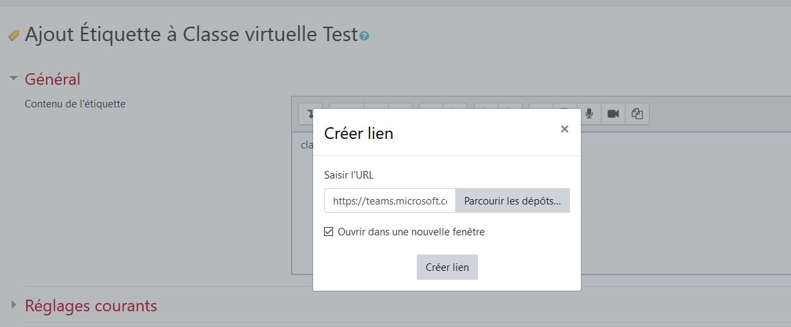
La section dans Moodle est prête :
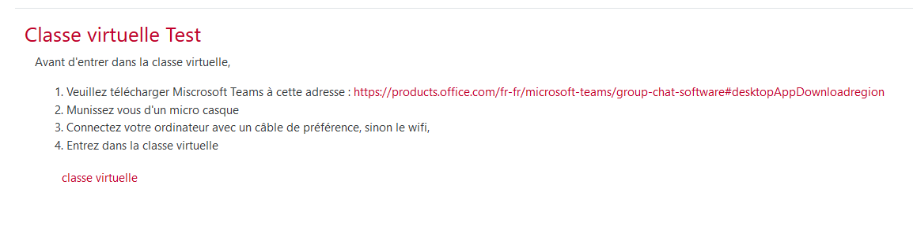
TEAMS : créer une équipe
Sur l'onglet de navigation "Equipe"
Création d'une équipe
Création d'une équipe
Création d'une équipe
Paramétrage d'une équipe
De la pertinence de créer ou non une équipe un nouveau canal... réflexion sur les usages.
TEAMS : les réunions privées en sous groupes
le créateur de la réunion peut créer des sous réunions dans une réunion d'équipe
paramétrages des sous réunions de groupe
Gestion des sous réunions de groupe
L'organisation de réunion avec des sous groupe ne s'improvise pas. Entrainez vous avant à plusieurs pour bien maîtriser son organisation.
TEAMS : les Add-ons
Ajouter des applications externes à des canaux d'équipe
Dans l'onglet du bas "Applications"
Usages
Cela ne dispense pas celui qui ajoute des applications externes de former les membres du canal à l'usage des applications qu'il ajoute...